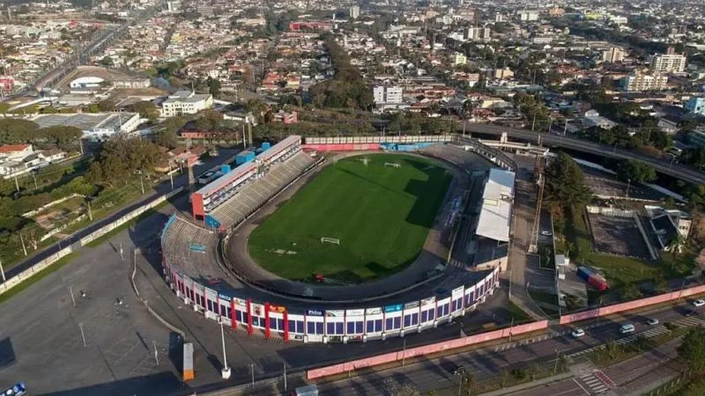

Sobre o Paraná Clube
O Paraná Clube é um tradicional clube de futebol da cidade de Curitiba, capital do estado do Paraná. Fundado em 19 de dezembro de 1989, o time surgiu da união de dois clubes importantes da cidade: o Colorado Esporte Clube e o Esporte Clube Pinheiros. Suas cores são vermelho, azul e branco, que representam a identidade do clube. Ao longo de sua trajetória, o Paraná conquistou uma torcida apaixonada e participou de diversas competições estaduais e nacionais. O clube possui uma história importante no futebol paranaense e continua sendo lembrado por seus torcedores pelos momentos marcantes que viveu dentro e fora de campo.

História do Paraná Clube
O Paraná Clube foi fundado em 19 de dezembro de 1989, em Curitiba. Sua criação aconteceu por meio da união do Colorado Esporte Clube com o Esporte Clube Pinheiros. Essa união deu origem a uma nova equipe que passou a representar uma parte importante do futebol da capital. Nos primeiros anos, o clube conseguiu conquistar espaço no cenário esportivo. O Paraná passou a disputar competições importantes e construiu uma trajetória marcada por títulos, grandes partidas e participação em campeonatos nacionais. Um dos períodos de destaque foi sua participação na primeira divisão do Campeonato Brasileiro. O clube também conquistou títulos do Campeonato Paranaense, fortalecendo sua presença no futebol estadual. Mesmo enfrentando dificuldades em diferentes momentos, o Paraná Clube continua tendo uma história reconhecida por seus torcedores e pela tradição no esporte paranaense.

Importância para Curitiba e para o Paraná
O Paraná Clube faz parte da história esportiva de Curitiba e representa uma parcela importante da cultura do futebol no estado. Sua presença em competições estaduais e nacionais ajudou a fortalecer o interesse pelo esporte na região. A equipe também proporcionou momentos especiais para seus torcedores, que acompanharam jogos, conquistas e desafios ao longo dos anos. A paixão da torcida é uma das características mais marcantes do clube. Além do futebol, o Paraná Clube representa uma tradição esportiva que passa de geração em geração. Sua história mostra como os clubes podem fazer parte da identidade de uma cidade e de sua população.

Curiosidades sobre o Paraná Clube
Fundação do clube
O Paraná Clube foi fundado em 19 de dezembro de 1989. Sua criação aconteceu depois da união de dois clubes tradicionais de Curitiba: Colorado e Pinheiros. Essa união marcou o início de uma nova história no futebol paranaense.
Estádio Vila Capanema
O Estádio Durival Britto e Silva, conhecido como Vila Capanema, é um dos lugares mais importantes da história do Paraná Clube. O estádio fica em Curitiba e é conhecido pelos torcedores paranistas.
Memória e Patrimônio
O Paraná Clube possui uma história muito importante para o futebol de Curitiba e do estado do Paraná. Ao longo dos anos, o clube construiu uma identidade marcada pelas cores vermelho, azul e branco, pela tradição esportiva e pela dedicação de seus torcedores. Cada partida, conquista e momento vivido faz parte da memória do clube e representa um capítulo de sua trajetória. Um dos principais símbolos dessa história é o Estádio Durival Britto e Silva, conhecido como Vila Capanema. O local é muito conhecido pelos torcedores paranistas e representa um importante patrimônio esportivo de Curitiba. Nele foram vividos diversos momentos marcantes, que continuam sendo lembrados por quem acompanha a equipe. A torcida também faz parte desse patrimônio. A paixão pelo Paraná Clube é transmitida entre gerações e demonstra a importância que o time possui para muitas famílias. Mesmo diante das dificuldades enfrentadas ao longo de sua história, o clube continua sendo lembrado por sua tradição e pela ligação com a cidade. As imagens desta seção ajudam a preservar essa memória, mostrando símbolos, momentos e elementos que representam a trajetória do Paraná Clube. Elas permitem conhecer melhor sua história e compreender por que o clube continua sendo importante para o futebol paranaense.
